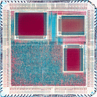

Resume for Gavin J Stark
Secondary school education
Queen Elizabeth's Hospital, Bristol, England (1979-1986).
- O levels:
-
Mathematics (A), Advanced Mathematics (A), Physics (A), Chemistry (A), French (A), German (A), Latin (A), English Language (A),
Electronics (A), Music (B), French Life and Literature (C)
- A levels:
-
Pure Mathematics (A), Applied Mathematics (A), Chemistry (A), Physics (A)
- S levels:
-
Pure Mathematics (2), Applied Mathematics (1)
University education
BA (Hons), Mathematics and Computing Science (1).
PhD, Dissertation titled 'Stream Handling in Multimedia Communication Systems', involving design and implementation of ATM network subsystems for a real multimedia communication system; global clock distribution to microsecond accuracy; performance evaluation of networked mulitmedia systems. Work based on Pandora system from Olivetti Research Laboratory.
Industrial experience
Acorn Computers, Cambridge, England (1990-1991)
Low-level software (graphics, colour handling, printer management) for
RISC-OS, on ARM-based microcomputers. Now incorporated into Acorn's
network computers.
- 1994-1995:
-
ATM switch and end point design
choice of EDA toolflow for startup company for ASIC and PCB design flow
specification of ASICs for ATM switch and end point
implementation in 0.8 micron CMOS with Silicon Architect's CBA architecture, in Verilog using Cadence Verilog-XL and Synopsys' Design Compiler
both switch and end point based around ARM microprocessor
- 1995-1996:
-
Design of architecture of single-chip solution for PCI NIC, cable modem,
xDSL modem, or small-scale switch (the 'ATOM' family)
integrated ARM7TDMI processor and
ATM25 PHY interface
fabricated in conjunction with
Cirrus Logic
implemented in 0.5 micron TLM CMOS using Verilog-XL, Synopsys' Design
Compiler, Synopsys' Logic Modelling PCI compliance suite, Chronologic
VCS, Quickturn M250 ASIC emulator
licensed to (amongst others and more)
COM21 (cable modems),
Next Level Communications (xDSL modems, division of GI),
Sphere Communications,
Westell (xDSL modems),
Broadband technologies (cable modems)
-
Specification of multimedia CODEC companion chip for 'ATOM'.
-
Design and implementation of high level tool suite to sit above Verilog, VHDL, and RTL level design (in TCL and C).
-
Continuing design and implementation of multimedia CODEC companion chip for 'ATOM'.
Summary of technical skills
I am an experienced silicon system designer, from top level software
down to submicron ASICs, with products which are both technically and
commercially successful. I have moved down from software design and
implementation, with a very strong theoretical background at Cambridge
University, through board design to ASIC design and implementation. My
PhD work involved systems analysis of a real-time multimedia
communication system, design and implementation of network protocol
stack software, assembler-level software and hardware design for
analysis of the performance of the whole system.
My software expertise spans from high-level user interfaces (in TCL
and C), through EDA database analysis tools (e.g. in C), to low-level
software such as device drivers (ARM assembler, occam) and games (C,
68000 assembler, ARM assembler). In addition I have used, in various
applications, Java, Lisp, numerous scripting languages, HTML (to 3.2).
My hardware design expertise covers PCB design up to 40MHz, using the
knowledge of the software in a system, to produce high performance,
low cost, adaptable designs.
My ASIC design expertise is based around a Verilog flow, using Design
Compiler for synthesis, covering specification, architecture design,
RTL implementation, simulation, test, fault coverage, manufacturing
test, silicon test. Realised designs range from 20k gates, 0.8 micron
with 4kByte embedded SRAM, to 60k gates, 0.5 micron with 12kByte
embedded SRAM, embedded processor, embedded analog clock and ATM25
physical layer.

My first ASIC (taken from Synopsys)
Any questions? Contact me